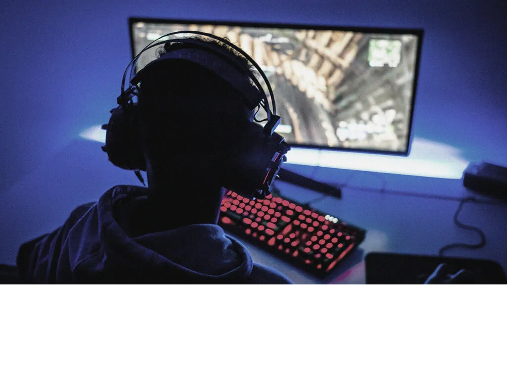
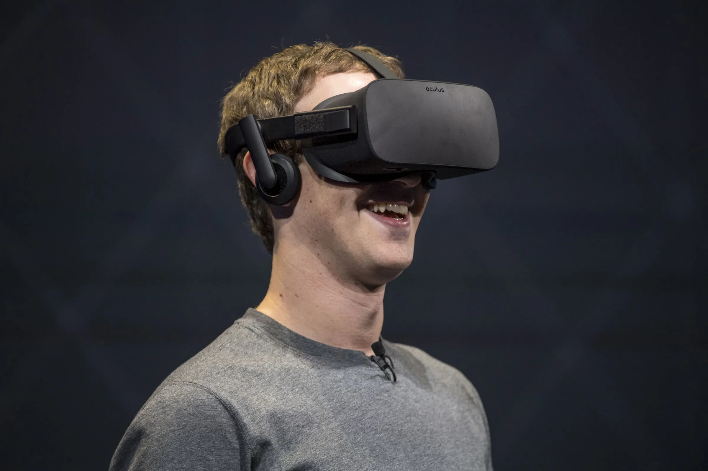

What is VR?
At this current stage, VR is split into three different categories. There is Non-Immersive, Semi-Immersive and Fully Immersive VR. VR is an important development in the technological industry due to its many advantages for both business and personal use. It is a rapidly growing industry with work being conducted on it every day. To narrow down such a broad topic, we are diving into the development of VR within the gaming industry. This is important as the gaming industry contains a huge market and VR is the net big step to improve the quality for all gamers. This technology being developed will also benefit people outside of the gaming industry for their personal use.
Non-Immersive VR

Non-Immersive VR is considered your classic gaming experience. It is the original way of gaming since the very beginning where you have your screen and controls. This may be with a keyboard or controller with a monitor or TV. It is called “Non-Immersive” because the player is not physically or visually immersed into their gaming environment. They can simply see their environment through the screen they are playing on. This is still the most popular way gamers play their games.
Semi-Immersive VR

Semi-Immersive VR is split in 2 parts. The player can either have very large monitors surrounding them to try give them a realistic view of their fantasy world or in more recent times they can use a VR headset which sits on the players face and visually immerses them into their world. It is called “Semi-Immersive” due to the player not being fully immersed into their world but they almost are. This is because the player is getting immersed into their environment visually, but not physically. This is the main current stage of VR in gaming is rapidly advancing.
Fully-Immersive VR
Fully-Immersive VR is the currently worked upon technology which will cause a huge boom in the gaming industry. It is being worked on as we speak. At this stage, they are still using headsets to give the user the visual elements of the game but are trying to achieve real virtual 3D views in order to bring the virtual items right in front of you. These objects are also planned to be interactable. Hence the name, “Fully-Immersive VR”. This will also include the use of body controls that will be connected to the body and surrounding areas which will be used to physically introduce your being into your fantasy world game. The idea of future successful VR is for the user to not be able to tell real life from virtual life.
thanks to W3C for tutorial and adapted code from Style Examples
thanks to WDN for HTML and CSS resources and any adapted code snippets from Mozilla Developer Network
thanks to wallpaperaccess for use of background image from WallpaperAccess free wallpapers
thanks to Michael Kraus for use of image from Getty Images
thanks to David Paul for use of image from Getty Images
thanks to Medium for use of image from Medium